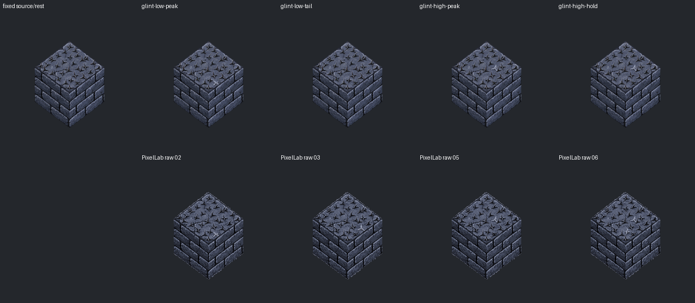

Покой
Покой

Сверху сборка; снизу исходные кадры API. Нажмите, чтобы открыть в полном размере.Два коротких блика за цикл 15,6 с, между ними 5 с покоя. Пиксели бликов выбраны из старых кадров PixelLab 02/03 и 05/06, фон — исходная статичная плита. Это сборка, а не сырые полные кадры API; новых поз и промежуточных рисунков нет.
Покой
Сверху сборка; снизу исходные кадры API. Нажмите, чтобы открыть в полном размере.На 8× оба блика видны в увеличенном сравнении. Маски, SHA-256 и расписание: candidate-metrics.json.